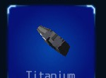
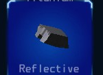
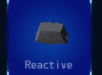
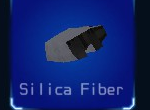
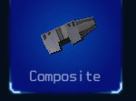

Titanium hull plating is a simple metal compound that is easy for repair systems to restore. As a result, this basic hull plating can be repaired at about 20% faster than other hull types. However, it doesn't offer any weapon impact defense advantage compared to other types.
Assembly: 20

Reflective hull plating uses a mirror-like surface to partially deflect incoming energy weapon fire. It provides about a 15% reduction in hull damage when impacted with energy weapon fire.
Assembly: 20

Reactive hull plating provide a counter-explosive effect against surface impacts from missiles. It offers about a 10% reduction in overall hull damage from missiles impacts.
Assembly: 20

Silica Fiber hull plating uses tightly wound glass fibers mixed with ceramic coatings to provide enhanced thermal protection. Using this plating results in about a 20% reduction in your ship's overall heat signature dissipation rate.
Assembly: 20

Composite hull plating uses a blend of carbon matrix and ceramic polymers for a significant weight reduction.
As a result, this plating reduces the ship's hull mass by about 20%, providing a modest agility improvement.
Assembly: 20